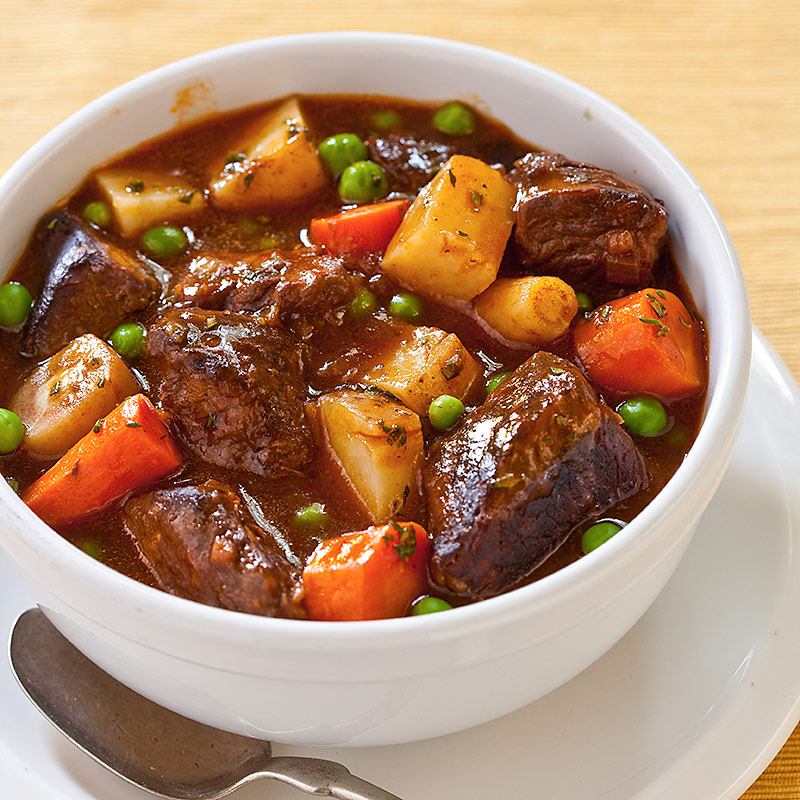

Favourite Dinner
Beef Stew

Preparation time 15 minutes, cooking time 2 hours 40 minutes.
Ingredients
- 25 g plain flour
- 1 kg stewing beef
- 75 ml olive oil
- 1 large onion
- 1 clove garlic
- 700 ml stock
- salt and pepper
- 700 g potatoes
- 500 g carrots
Preparation
- Cut beef into chunks and coat with flour
- Skin and chop onion
- Skin and finely chop garlic
- Peel potatoes and cut into chunks
- Peel carrots and cut into chunks
Cooking
- Heat oil in casserole
- Add chunks of beef a few at a time, removing as they brown
- Add onion and garlic, cooking until tender
- Stir in stock, salt and pepper, cook until slightly thickened
- Return meat to casserole, bring to boil, simmer for 2 hours
- Add potatoes and carrots, stir well and bring back to the boil
- Reduce heat and simmer for 30-40 minutes until beef and vegetables are tender